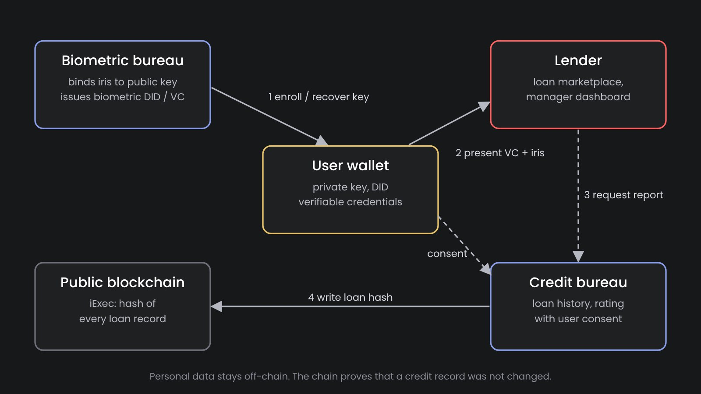

Web 3.0 Identity for the Unbanked: Biometric DIDs and Verifiable Credit Histories
What happens to a person's digital identity when the phone is lost? In the Web 3.0 model the user holds the private key and the credentials, and nobody else can restore them. For a crypto enthusiast this is a feature. For a refugee or a farmer who needs a loan, it means losing their identity and credit history together with the phone. In INGRESS we proposed a solution to this problem: a biometric bureau that binds the key to the person, and a credit history that can be verified on a blockchain without disclosing private data.
Self-sovereign identity in two paragraphs
Self-sovereign identity (SSI) is the Web 3.0 approach to identity. Instead of storing personal data in the databases of every service provider, the user keeps it on their own device, in a digital wallet. A trusted party, the issuer, signs a credential about the user: a proof of identity, education, salary or a bank statement. The user presents this credential to anyone who needs it, the verifier, and the verifier checks the issuer's signature cryptographically, without calling the issuer. The W3C standardized both parts: Decentralized Identifiers (DIDs) and Verifiable Credentials.
This way the user decides what to share and with whom, and a service provider does not have to store data it does not need. It is not a theory anymore. The EU obliges member states to offer citizens a European Digital Identity Wallet by the end of 2026, and MOSIP's open-source Inji wallet has been piloted for national ID credentials, for example in Peru.
The weak point: the private key
A wallet is only as reliable as the private key inside it. If the key is lost, the user cannot prove that the credentials are theirs. If the key is stolen, someone else can present them. How to get a new key and keep the identity and the history connected to it? Crypto wallets answer with seed phrases and social recovery, and both assume a user who can safely store twelve words or has several trusted contacts with smartphones. The people who need financial inclusion the most are exactly the people for whom these assumptions do not hold.
When we started working on this in 2021, the question that Microsoft's 2018 white paper on decentralized identity had left open, how users recover their keys, was still unresolved. To the best of our knowledge, it is still not solved for users without technical skills.

Biometric bureau: the key is bound to the person
The biometric bureau issues a credential that ties the user's public key to their biometric traits. At registration the wallet generates a key pair, the user's iris is scanned, and the bureau checks that this person has not registered before. Only then it issues a biometric DID in the form of a W3C Verifiable Credential.
Two properties follow from this. The first is recovery. If the key is lost or compromised, the user comes to a lender's office, the iris is scanned again, the old key is revoked and a new one is bound to the same identity. The credit history stays with the person, not with the phone. The second is uniqueness. One person can hold only one biometric DID, so a borrower cannot create a new identity after a default. In Web 3.0 terms, the bureau protects the ecosystem from Sybil attacks, which is the main risk of any lending marketplace without documents.
The bureau stores biometric templates, not images, and the templates are bound to public keys, not to names. The private key never leaves the user's wallet, and the user can choose to back it up with the bureau or to manage it on their own.
Credit bureau: a history that cannot be rewritten
The second service is a credit bureau, built in INGRESS as a prototype. It keeps the loans of each user: amount, dates, repayment. When a loan is issued and when it is repaid, the credit bureau calculates a hash of the record and an iExec task writes it to the public blockchain. Any lender can then check that the record they receive matches the hash on the chain, and so that nobody, including the bureau itself, has changed the credit history afterwards.
The personal data itself stays off-chain. A lender gets a credit report only with the user's consent, presented from the wallet. A further step is a credit rating calculated with homomorphic encryption: the rating is computed over encrypted transactions and only the final result is decrypted and shared.
A marketplace where lenders compete
On top of the two bureaus, the design adds a loan marketplace. Lenders publish offers, users browse them in the wallet and apply with their biometric DID and credit report, and managers review applications in a dashboard. Since every lender sees the same verified history, a borrower with a good record can choose the cheapest offer. Consider the effect at scale: credit organizations get access to people they could not serve before, and borrowers get credit that becomes cheaper as lenders compete for them.
What we built
INGRESS was developed by Iriscan within NGI ONTOCHAIN, a program of the EU's Next Generation Internet initiative, in 2022–2023. Within the project we built a working prototype:
- a mobile wallet that stores the user's credentials, open source on GitHub;
- a biometric bureau that issues and verifies biometric DIDs and handles key re-issuance;
- a credit bureau prototype with a web interface that keeps loan records, verifies credit scores and manages loans;
- a service that writes transaction hashes to the iExec blockchain for timestamping (iExec task, writer);
- the open-source Iriscan Biometric SDK for capture and matching in all of them.
The loan marketplace and the encrypted credit rating are the direction in which INGRESS is meant to develop. The next step is a pilot with a lending organization that serves borrowers without documents, and integration of the biometric DID with national wallets such as Inji, so that an identity verified by the government and a credit history verified by lenders live in the same wallet.
Limitations
A biometric bureau is a point of trust, and it should be treated as one. Biometric data is a special category of personal data under GDPR, so the bureau needs a lawful basis, encryption, access logs and a retention policy. The model also does not remove the need for an operator: enrollment and key recovery happen in person. We consider this a strength rather than a weakness, because the moment a person proves who they are is exactly the moment where fraud has to be stopped.
Sources: W3C Verifiable Credentials Data Model 2.0; W3C Decentralized Identifiers; Garrigues, EU Digital Identity Wallet timetable; NGI ONTOCHAIN.